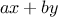
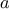
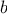
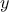

Chapter
2
Building Abstractions with Data
|
We now come to the decisive step of mathematical abstraction: we
forget about what the symbols stand for. … [The mathematician]
need not be idle; there are many operations which he may carry out
with these symbols, without ever having to look at the things they
stand for.
Hermann Weyl,
The Mathematical Way of Thinking
|
We concentrated in chapter 1 on computational processes and on the
role of
functions
in program design. We saw how to use primitive
data (numbers) and primitive operations (arithmetic operations), how to
combine
functions
to form compound
functions
through composition,
conditionals, and the use of parameters, and how to abstract
functions
by using function.
We saw that a
function
can be
regarded as a pattern for the local evolution of a process, and we
classified, reasoned about, and performed simple algorithmic analyses
of some common patterns for processes as embodied in
functions. We
also saw that higher-order
functions
enhance the power of our
language by enabling us to manipulate, and thereby to reason in terms
of, general methods of computation. This is much of the essence of
programming.
In this chapter we are going to look at more complex data. All the
functions
in chapter 1 operate on simple numerical data, and simple
data are not sufficient for many of the problems we wish to address
using computation. Programs are typically designed to model complex
phenomena, and more often than not one must construct computational
objects that have several parts in order to model real-world phenomena
that have several aspects. Thus, whereas our focus in chapter 1 was
on building abstractions by combining
functions
to form compound
functions, we turn in this chapter to another key aspect of any
programming language: the means it provides for building abstractions
by combining data objects to form compound data.
Why do we want compound data in a programming language? For the same
reasons that we want compound
functions: to elevate the conceptual
level at which we can design our programs, to increase the modularity
of our designs, and to enhance the expressive power of our language.
Just as the ability to define
functions
enables us to deal with
processes at a higher conceptual level than that of the primitive
operations of the language, the ability to construct compound data
objects enables us to deal with data at a higher conceptual level than
that of the primitive data objects of the language.
Consider the task of designing a system to perform arithmetic with
rational numbers. We could imagine an operation add_rat that takes
two rational numbers and produces their sum. In terms of
simple data, a rational number can be thought of as two integers: a
numerator and a denominator. Thus, we could design a program in which
each rational number would be represented by two integers (a numerator
and a denominator) and where add-rat would be implemented by two
functions
(one producing the numerator of the sum and one producing
the denominator). But this would be awkward, because we would then
need to explicitly keep track of which numerators corresponded to
which denominators. In a system intended to perform many operations
on many rational numbers, such bookkeeping details would clutter the
programs substantially, to say nothing of what they would do to our
minds. It would be much better if we could “glue together” a
numerator and denominator to form a pair—a compound data
object—that our programs could manipulate in a way that would be
consistent with regarding a rational number as a single conceptual
unit.
The use of compound data also enables us to increase the modularity of
our programs. If we can manipulate rational numbers directly as
objects in their own right, then we can separate the part of our
program that deals with rational numbers per se from the details of
how rational numbers may be represented as pairs of integers. The
general technique of isolating the parts of a program that deal with
how data objects are represented from the parts of a program that deal
with how data objects are used is a powerful design methodology called
data abstraction. We will see how data abstraction makes
programs much easier to design, maintain, and modify.
The use of compound data leads to a real increase in the expressive
power of our programming language. Consider the idea of forming a
“linear combination”
. We might like to write a
function
that would accept
,
,
, and
 as arguments and return the
value of
. This presents no difficulty if the arguments are to
be numbers, because we can readily define the
function
function linear_combination(a,b,x,y) {
return a * x + b * y;
}
But suppose we are not concerned only with numbers. Suppose we would
like to describe a process that forms
linear combinations whenever addition and multiplication are
defined—for rational numbers, complex numbers, polynomials, or
whatever. We could express this as a
function
of the form
function linear_combination(a,b,x,y) {
return add(mul(a,x),mul(b,y));
}
where
add and
mul are not the primitive
functions
+
and
* but rather more complex things that will perform the
appropriate operations for whatever kinds of data we pass in as the
arguments
a,
b,
x, and
y. The key point is
that the only thing
linear_combination should need to know about
a,
b,
x, and
y is that the
functions
add
and
mul will perform the appropriate manipulations. From the
perspective of the
function
linear_combination, it is
irrelevant what
a,
b,
x, and
y are and even
more irrelevant how they might happen to be represented in terms of
more primitive data. This same example shows why it is important that
our programming language provide the ability to manipulate compound
objects directly: Without this, there is no way for a
function
such
as
linear_combination to pass its arguments along to
add
and
mul without having to know their detailed
structure.
21
We begin this chapter by implementing the rational-number arithmetic
system mentioned above. This will form the background for our
discussion of compound data and data abstraction. As with compound
functions, the main issue to be addressed is that of abstraction as a
technique for coping with complexity, and we will see how data
abstraction enables us to erect suitable
abstraction barriers
between different parts of a program.
We will see that the key to forming compound data is that a
programming language should provide some kind of “glue” so that data
objects can be combined to form more complex data objects. There are
many possible kinds of glue. Indeed, we will discover how to form
compound data using no special “data” operations at all, only
functions. This will further blur the distinction between
“function” and “data,” which was already becoming tenuous toward
the end of chapter 1. We will also explore some conventional
techniques for representing sequences and trees. One key idea in
dealing with compound data is the notion of
closure—that the
glue we use for combining data objects should allow us to combine not
only primitive data objects, but compound data objects as well.
Another key idea is that compound data objects can serve as
conventional interfaces for combining program modules in
mix-and-match ways. We illustrate some of these ideas by presenting a
simple graphics language that exploits closure.
We will then augment the representational power of our language by
introducing
symbolic expressions—data whose elementary parts
can be arbitrary symbols rather than only numbers. We explore various
alternatives for representing sets of objects. We will find that,
just as a given numerical function can be computed by many different
computational processes, there are many ways in which a given data
structure can be represented in terms of simpler objects, and the
choice of representation can have significant impact on the time and
space requirements of processes that manipulate the data. We will
investigate these ideas in the context of symbolic differentiation,
the representation of sets, and the encoding of information.
Next we will take up the problem of working with data that may be
represented differently by different parts of a program. This leads
to the need to implement
generic operations, which must handle
many different types of data. Maintaining modularity in the
presence of generic operations requires more powerful abstraction
barriers than can be erected with simple data abstraction alone. In
particular, we introduce data-directed programming as a
technique that allows individual data representations to be designed
in isolation and then combined
additively (i.e., without
modification). To illustrate the power of this approach to system
design, we close the chapter by applying what we have learned to the
implementation of a package for performing symbolic arithmetic on
polynomials, in which the coefficients of the polynomials can be
integers, rational numbers, complex numbers, and even other
polynomials.